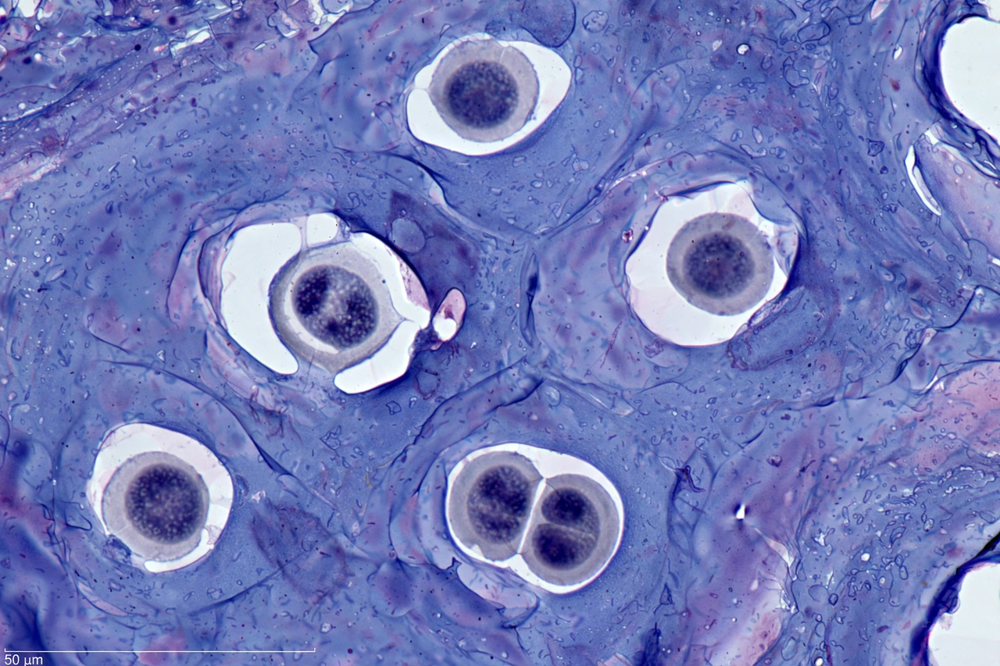

Cartilage
From Wikipedia, the free encyclopedia
| Cartilage | |
|---|---|
 | |
| Type | Connective tissue |
| Cells | Chondrocytes, chondroblasts |
| Matrix | Collagen fibres, proteoglycans (aggrecan), water |
| Types | Hyaline, elastic, fibrocartilage |
| Precursor | Mesenchyme |
Cartilage is a resilient and smooth type of connective tissue. In tetrapods it covers and protects the ends of long bones at the joints as articular cartilage, and is a structural component of the rib cage, intervertebral discs, bronchi and ear, among other structures. It is softer and far more flexible than bone, and unlike other connective tissues contains no blood vessels or nerves; its cells, the chondrocytes, are nourished by diffusion through the matrix.
Structure and types
Chondrocytes sit in spaces called lacunae within an extracellular matrix rich in type II collagen and the proteoglycan aggrecan, whose bound water gives cartilage its compressive resilience. Hyaline cartilage — glassy and bluish-white — forms articular surfaces, costal cartilages, the nose, tracheal rings and the embryonic skeleton. Elastic cartilage, with abundant elastin fibres, shapes the external ear and epiglottis. Fibrocartilage, dense in type I collagen, forms intervertebral discs, the menisci of the knee and the pubic symphysis, resisting tension and shear.
Growth and development
Cartilage grows interstitially (from within, by chondrocyte division) and appositionally (from the perichondrium). In endochondral ossification, a hyaline cartilage model is progressively replaced by bone during development; the epiphyseal growth plates that lengthen children's bones are cartilage until skeletal maturity. In cartilaginous fishes such as sharks, the adult skeleton remains cartilaginous.
Clinical significance
Because it is avascular, cartilage heals poorly. Degeneration of articular cartilage produces osteoarthritis, the commonest joint disease. Tumours of cartilage include benign chondromas and malignant chondrosarcomas (see cancer). Relapsing polychondritis is an autoimmune attack on cartilage. Tissue-engineering approaches aim to regrow cartilage from cultured chondrocytes or stem cells; the boundary between cartilage and the cell membranes of its chondrocytes regulates nutrient exchange.